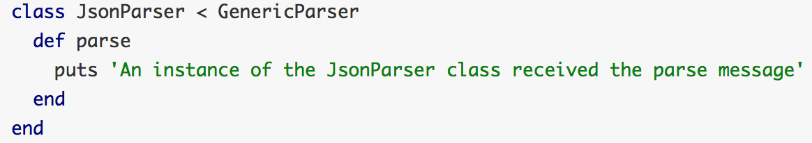

It's all about the class
Pulled from the Pickaxe, Inheritance in context of a class is basically means that you can create classes that 'inherit' methods and properties from another class. In using inheritance you assign hierarchy to the classes. The class inheriting is known as the child class, whereas the class being inherited from is the parent class. And the idea of the child class inheriting from the parent class is known as subclassing. Let's take a look at an example.
In this example, we have a parent Animal class on lines 1-5. It has a method breathe. Now on line 7, I have caused my Mammal class to inherit from the Animal class. Becuase of subclassing, any instance of my mammal class should be able to call the breathe method in my Animal class. Try running line 11 in your terminal.
You should have returned **takes breath**.
Inheritance can be used to create templates from the parent class into the child class. Let's take a look at a particular template method.
Here we create a generic parent class with a method parse. This method will raise an error when children instances try to call this method unless the child class includes a version of the same method.
As you create your own version of the parse method in the child class, you are able to call parse in instances of the child. The parse method in the child class will overwrite the parse method in the parent class.
Using Modules
Modules are similar to class but only contain behavior. You can think of it as a way to bundle similar methods that similar classes need. Let's take a look at the example below.
On lines 1-5, I create a module Superpowers. Notice that I use the key word Module instead of class as I create the module. Now on line 14, I allow my Mammal class to use the module class, so on line 18, my mammal should now be able tho shoot lazers.